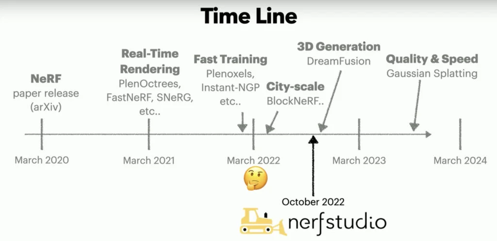

Introducción a NeRF
Modelos 3D desde 2D
Los Campos de Radiancia Neural (NeRFs) representan una técnica avanzada en el campo de la visión por computadora y gráficos computacionales. Utilizan redes neuronales para generar modelos 3D realistas a partir de imágenes 2D, ofreciendo nuevas posibilidades en diversas aplicaciones tecnológicas.

Introducción a los NeRFs:
Los NeRFs son una tecnología innovadora que ha revolucionado la manera en que se crean y representan las escenas tridimensionales. A través del uso de redes neuronales profundas, los NeRFs pueden transformar múltiples imágenes 2D de una escena en una representación 3D detallada y precisa.
Funcionamiento de los NeRFs
- Captura de Imágenes: Para empezar, se requieren múltiples imágenes de una escena capturadas desde diferentes ángulos. Estas imágenes sirven como datos de entrada para el modelo.
- Entrenamiento del Modelo: Una red neuronal se entrena utilizando estas imágenes para aprender a predecir la radiancia (color e intensidad de la luz) y la densidad de cada punto en el espacio tridimensional. Este proceso de aprendizaje permite que el modelo entienda cómo se debe representar cada punto en la escena en 3D.
- Renderizado: Una vez que el modelo está entrenado, puede generar nuevas vistas de la escena desde ángulos no capturados originalmente, ofreciendo una visualización tridimensional completa.
El proceso de entrenamiento de los NeRFs implica la minimización de una función de pérdida, que compara las vistas generadas por el modelo con las imágenes reales, permitiendo que el modelo capture detalles finos y texturas realistas.
Aplicaciones de los NeRFs
- Realidad Virtual y Aumentada: Los NeRFs permiten la creación de entornos inmersivos y realistas, mejorando significativamente la experiencia del usuario en aplicaciones de realidad virtual y aumentada.
- Cine y Videojuegos: Esta tecnología facilita la creación de gráficos de alta calidad, reduciendo el tiempo y los recursos necesarios en comparación con las técnicas tradicionales de modelado 3D.
- Simulaciones Médicas: Los NeRFs se utilizan para crear modelos detallados del cuerpo humano, mejorando las herramientas de diagnóstico y planificación quirúrgica.
Desafíos y Soluciones
- Volumen de Datos: El entrenamiento de los NeRFs requiere una gran cantidad de imágenes, lo que puede representar un desafío.
- Solución: Se están desarrollando técnicas de compresión y optimización de datos para reducir la cantidad de imágenes necesarias.
- Computación Intensiva: El renderizado de los NeRFs es un proceso computacionalmente costoso.
- Solución: La implementación de algoritmos de optimización y el uso de hardware especializado, como GPUs, están ayudando a mitigar este problema.
Innovaciones Recientes
Una de las plataformas más recientes y avanzadas para trabajar con NeRFs es nerfstudio, que centraliza la investigación y el desarrollo en este campo. Nerfstudio tiene como objetivo simplificar el uso y aprendizaje de NeRFs, facilitando su implementación en diversos proyectos.
Una innovación destacada en nerfstudio es la pipeline de Gaussian Splatting, que promete mejorar la calidad y velocidad del renderizado. Además, se están realizando avances en la creación de escenas 4D, que incluyen el tiempo como una dimensión adicional, ofreciendo nuevas posibilidades para la industria del entretenimiento.
Resumen:
Los Campos de Radiancia Neural (NeRFs) representan una herramienta poderosa en la creación de modelos 3D a partir de imágenes 2D. Su capacidad para generar visualizaciones realistas y detalladas abre nuevas oportunidades en diversas aplicaciones tecnológicas, desde la realidad virtual y aumentada hasta el cine, videojuegos y simulaciones médicas. A pesar de los desafíos técnicos, los continuos avances en la investigación y el desarrollo de NeRFs prometen revolucionar la creación de contenido visual.